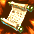
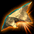
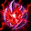
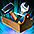
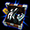

討伐コンテンツ2026
2026年10月22日リニューアル後のエリアボス討伐を紹介します。デイリー・ウィークリーの選び方から各ボスの攻略へ進み、入場・募集・報酬確認・貢献ショップもこのページで確認できます。
デイリー・ウィークリー・レイドの違い
エリアボスの討伐には、毎日進めるデイリー討伐と、週1回のウィークリー討伐があります。同じボスでも、デイリーはバッジ素材などの収集、ウィークリーは専用リングと強化素材の獲得が中心です。
| 種類 | 主な目的・報酬 | 参加の仕組み |
|---|---|---|
| デイリー討伐 | 戦利品や討伐バッジの素材を集める | 基本1日1回。討伐許可証で追加入場 |
| ウィークリー討伐 | ボス専用リングと、その強化素材を得る | 週1回。週間討伐ボス全体でクリア枠を共有 |
| レイド | 経験値とレイド報酬を得る | 1時間ごとの申請制。1日1回クリア |
デイリーとウィークリーは別々の回数で管理されるため、両方に参加できます。ウィークリーでは、その週にどのボスのリング・素材を集めるかを選びます。
レイドは、NPC「ユスピナ」から時刻を選んで申し込み、開催時刻に合わせて入場するコンテンツです。出発2分前に申請が締め切られます。2026年10月22日以降は1日1回クリアでき、討伐コンテンツとは別にレイド報酬が用意されています。
レイドの参加手順・ボス・詳しい報酬は、専用のレイド記事で紹介します。
ボス別の攻略ページ
討伐画面でボスを選択します。参加レベルや制限時間、戦闘の流れ、専用報酬は各攻略ページで確認できます。
| ボス | デイリー討伐 | ウィークリー討伐 |
|---|---|---|
| アスタロト | デイリーの戦闘・報酬 | 戦闘・電鱗のリング |
| シュラグ | デイリーの戦闘・バッジ | 討伐画面から選択 |
| ファルコン | デイリーの戦闘・バッジ | 戦闘・熱風のリング |
| ゲリオ | デイリーの戦闘・バッジ | 討伐画面から選択 |
| セルケピア | 朱光の核・討伐バッジ | 戦闘・蠍王の指輪 |
入場とクリア回数
冒険家協会バー（31,64）のNPC「討伐騎士団長」、または統合ガイド（F1）の「デイリー・週間討伐」から参加します。確定報酬の獲得回数を消費するのは、入場時ではなくクリア時です。
| 項目 | デイリー討伐 | ウィークリー討伐 |
|---|---|---|
| 基本クリア回数 | 1日1回 | 週1回 |
| リセット | 毎日0時 | 毎週月曜0時 |
| 追加参加・共有制限 | 討伐許可証で追加入場 | 週間討伐ボス全体で週1回を共有 |
デイリーとウィークリーは別々の回数で管理されます。いずれかの週間討伐ボスをクリアすると、次のリセットまで他の週間討伐ボスにも入場できません。
討伐画面とパーティー募集
討伐画面で、各ボスの推奨レベル・参加可能人数・確定報酬を確認できます。「募集」で参加メンバーを集められ、パーティー加入中にリーダーが募集機能を使うと、別フィールドのメンバーを呼び出せます。

討伐報酬リスト
討伐画面上部のトロフィーボタンから「討伐報酬リスト」を開きます。ボスごとの報酬と、デイリー・週間の報酬獲得状況を確認できます。

討伐貢献ショップ
冒険家協会バー（31,64）のNPC「討伐騎士団長」から利用できます。2026年10月22日より、従来の討伐入場券ショップが討伐貢献ショップへ変更されました。
| 交換品 | 購入費用 | 購入回数 |
|---|---|---|
 討伐許可証[T]1個 | 制限なし | |
| 討伐許可証[T]1個 | 制限なし | |
| 討伐隊貢献の証1個 | シュラグの角5個 またはファルコンの翼装飾5個 または  ゲリオの鎧の欠片5個または  朱光の核5個または | キャラクターごと週1回 |
| 討伐隊支援BOX1個 | 討伐隊貢献の証1個 | キャラクターごと週1回 |
討伐隊貢献の証は、使用する通貨を変えてもキャラクターごとに週1個までです。討伐隊支援BOXも週1個まで購入でき、どちらも毎週月曜0時に購入回数がリセットされます。
| アイテム | 用途・説明 | 最大スタック数 | 制限 |
|---|---|---|---|
| 討伐隊貢献の証 | 多数のモンスターを討伐した功績を認め、上位モンスターの討伐支援を受けられる証。討伐隊支援BOXと交換。 | 999個 | 取引・破壊・銀行取引・商店販売不可 |
| 討伐隊支援BOX | 強大な魔物を狩る冒険家のために協会が用意した、冒険の準備に役立つアイテムが入った箱。 | 100個 | 取引・銀行取引・商店販売不可 |
討伐隊支援BOXの内容
開封すると、次の報酬のうち1種類を確率に応じて獲得します。解放オプション変換器は、1個・2個・3個がそれぞれ別の抽選枠です。
| アイテム | 獲得数 |
|---|---|
 レプリカ封印解放道具箱 | 1個 |
| 1個 | |
 完全封印解放道具箱 | 1個 |
| 1個 | |
| 1個 | |
| 解放オプション変換器 | 1個／2個／3個（それぞれ別の抽選枠） |
| 宿命のOP魔法のお守り箱 | 1個 |
| 超越の書「物理強打」 | 1冊 |
| 超越の書「魔法強打」 | 1冊 |
| 超越の書「魔力の暴走」 | 1冊 |
| 超越の書「覚醒」 | 1冊 |
| 超越の書「適応力」 | 1冊 |
| 超越の書「耐性」 | 1冊 |
| 超越の書「魔力吸収」 | 1冊 |
| 超越の書「時空の歪み」 | 1冊 |
| 超越の書「楔」 | 1冊 |
| 超越の書「魔力増幅」 | 1冊 |
素材で交換する場合は、いずれか1種類を5個使用します。討伐許可証なら100個です。購入回数は共通なので、異なる素材を順に使って同じ週に証を複数購入することはできません。